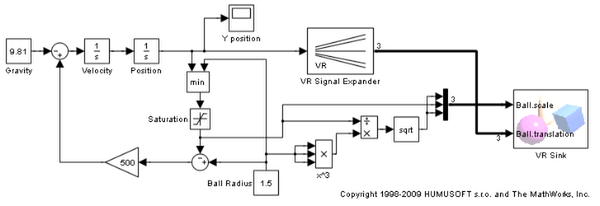
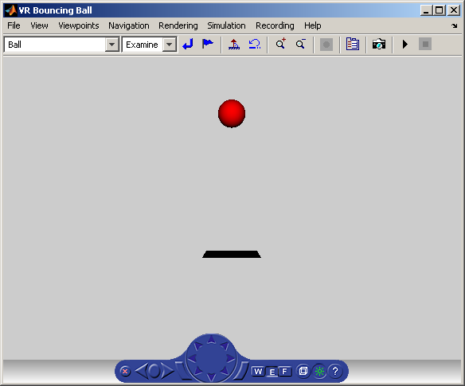
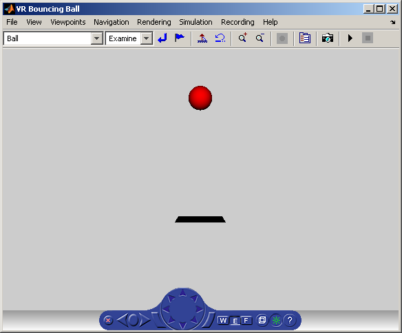
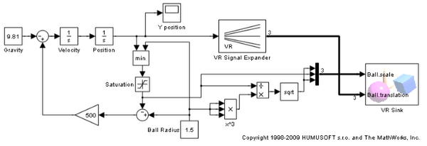
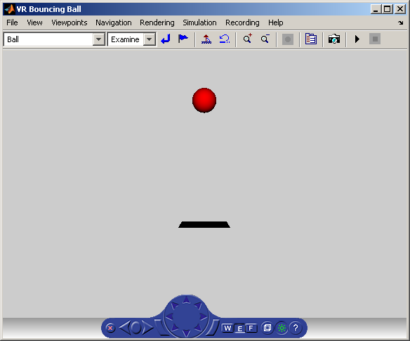

Bouncing Ball
The vrbounce example visualizes a ball bouncing from a floor. The ball deforms as it hits the floor keeping the volume of the ball constant. The deformation is achieved by modifying the scale field of the ball.
 
 The vrbounce example visualizes a ball bouncing from a floor. The ball deforms as it hits the floor keeping the volume of the ball constant. The deformation is achieved by modifying the scale field of the ball.
 